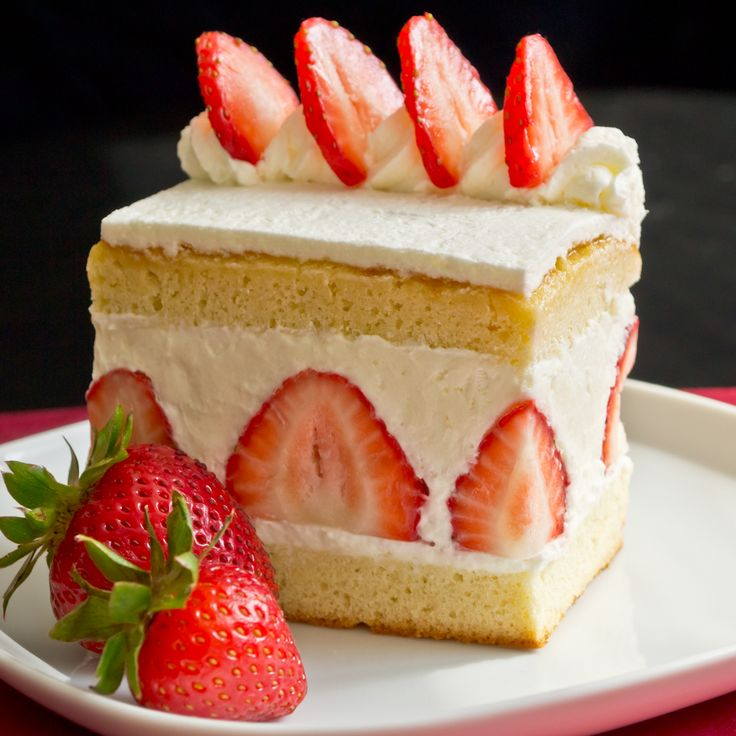

Japanese strawberry shortcake :D

A perfect spongy strawberry cake ideal for any occasion
Ingredients
For the sponge cake
- 3 tbsp of unsalted butter
- 2 tbsp of whole milk
- 4 large eggs
- 1/2 cup od sugar
- 1 cup of cake flour
- 1 tbsp of butter for greasing
For the syrup
- 2 tbsp of water
- 3 tbsp of sugar
- (Optional) 1 tbsp of liquor of choice
For the decorations
- 1 lb os strawberries
- 10 blueberries
- 2 springs of mint leaves
Instructions
- Make sure the eggs and butter are in room temperature.
- Trace a circle in a parchment paper of the size of the pan that you are going to use to bake the cake.
- Grease one side of the paper and all the surface of the pan. Place the paper with the grease side up.
- Preheat your oven to 180°C (350°F) for 10-20 minutes.
- Use 1 pot and a heat resistance container. Boil water in the pot to boil point in high heat. Once boiling, bring it down enough to keep a steady simmer. Then, in the container place the 3 tbsp of butter and place it on top of the pot and let the butter melt softly.
- Once the butter is melted, mix it with 2 tbsp of whole milk and whisk.
To make the sponge cake
- In a bowl, break 4 eggs and whisk it.
- Add 1/2+2 tbsp of sugar to the eggs and mix.
- In another pot different from before, bring about 2 inch of water to boil. Then, bring the mix of eggs to a water bath and keep mixing, but be careful to not turn te eggs to scrambled eggs.
- Mix until the temperature of the egg mixture gets to 40°C. Remove the bowl and place it in a mixer whit the whisk attachment.
- Mix on high speed (level 10) for 2 minutes until the mixing is fluffy
- When the batter rise, lower to low speed for 30 seconds. Stop the mixer and lift some of the batter with the whisk to check the consistency. If the batter falls off your whisk in a solid line or ribbon on top of the mixture, you have reached the “ribbon stage”. Remove the bowl from the stand mixer.
- Add half of the flour to the batter and mix slowly in a down-and-over notion.
- Add the remaining of the batter quickly.
- With a spatula, take out one scoop of the batter from the bowl and add it to the butter and milk mixture.
- Incorporate the butter and milk mixture into a small amount of the batter first before adding it to the entire cake batter.
- Add the mixture back into the cake batter by pouring it over a silicone spatula. This prevents the mixture from deflating the batter and helps disperse the mixture. Gently fold until incorporated. When you lift the spatula, the batter should fall like a ribbon.
- Pour the batter into the center of the cake pan, from right above the cake pan. You want to avoid introducing extra air into the batter at this point. Collect the leftover batter in the bowl and pour it around the edges of the cake pan, not the center.
- Firmly tap the cake pan on the counter to release air bubbles in the batter.
- In the preheated oven, bake at 350ºF (180ºC) for 20-25 minutes. Check if the sponge cake is done by inserting a skewer in the middle; if it comes out clean, the cake is ready. While the cake is baking, start preparations for the cake assembly.
- As soon as you take out the cake pan from the oven, drop it on the counter to “shock” the cake so it stops shrinking. Separate the cake from the pan by running a sharp knife or offset spatula around the sides.
- Take the cake out of the pan by placing the wire rack on top and flipping it over.
- Immediately remove the parchment paper.
- Cover the cake with a damp towel until cooled (to keep moisture in the cake). Make sure the towel is thin (not heavy) and wring the water out well so that the towel is damp, not wet.If you keep the sponge cake for later use, wrap it with plastic wrap and keep it in the fridge.
Cake filling and decoration
- Divide the strawberries into 2 groups, for decoration and for filling. Keep the beautiful, same-sized strawberries for the decoration. Remove the husk and clean the strawberries with a damp paper towel (do not wash, as we do not want the strawberries to be moist and become moldy). Slice off the core for all the strawberries.
- For the strawberries that we will use for the decoration, cut them in half lengthwise. For the strawberries that we will use for filling, slice them lengthwise into ¼-inch (5 mm) slices.
- To make the syrup, combine water, sugar, and liquor (optional) in a small bowl. Microwave for 1 minute to dissolve the sugar.
Whipped cream
- Prepare an ice bath by placing ice cubes and water in a large bowl. Place a clean and dry mixing bowl in the ice bath and add heavy whipping cream and sugar to keep it cold.
- Transfer the mixing bowl to the stand mixer and whisk on high speed. The cream will become thicker and smooth. When you lift the whisk out of the cream while it is still liquid, and the cream holds its shape as it drops, it is ready. Remove the bowl from the stand mixer and put it back in the ice bath.
Cake assembly
- With a serrated knife, slice the middle of the cooled cake horizontally into half. Now you have 2 layers (top and bottom).
- Place the bottom of the cake on the cake circle. Brush the syrup on the top and sides of the bottom layer. This will help the sponge cake stay moist.
- Using a hand whisk, whisk only the cream at one spot by the edge of the bowl instead of whisking the entire bowl of cream. We will be making whipped cream as we need it. With this approach, we can also control the stiffness of the whipped cream.
- When the cream reaches medium peaks, transfer it to the top of the bottom cake layer. Medium peaks mean when you lift the whisk, the cream will hold its shape, but the tip of the peaks will fold back on itself.
- Spread the whipped cream evenly. If you do not have enough whipped cream, whip more and add it onto the cake.
- Place the sliced strawberries on top of the whipped cream as you see in the pictures. Keep the center area open by not covering it with strawberries. This will make it easier to cut the cake into slices.
- Transfer the whipped cream to the top of the strawberry layer. Spread just enough cream to cover the strawberries; do not add too much.
- Place the top layer of the sponge cake over the bottom layer. Brush the syrup on the top and sides of the sponge cake.
- Whip more cream and place it on top of the cake.
- Coat all the cake whit whipped cream.
- Remove the excess of whipped cream
Decoration
- Decorate with whipped cream and fruit on the top at your liking.
Enjoy :)